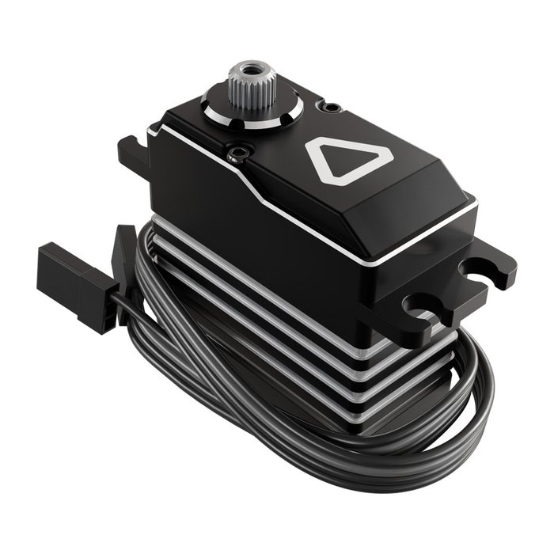
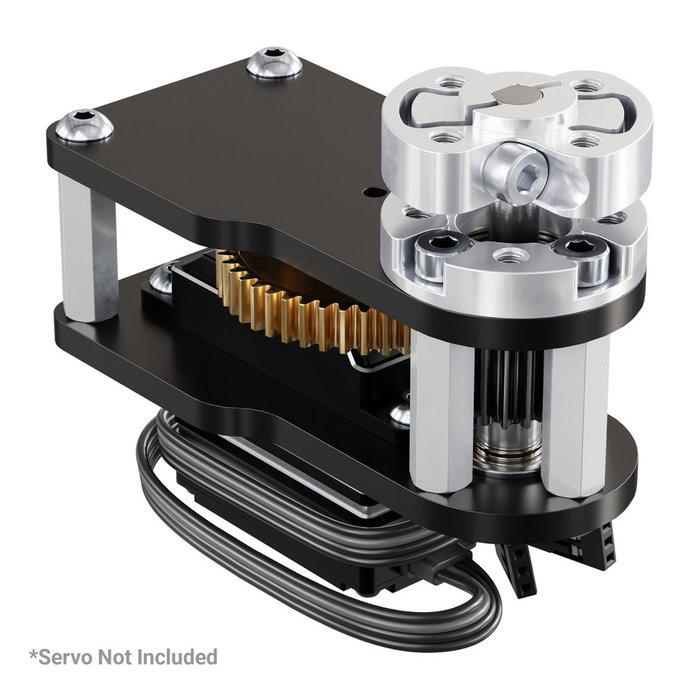
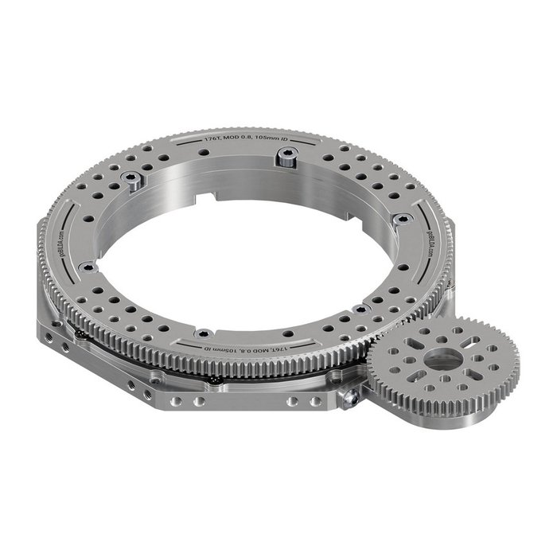

A turret lets the shooter swing left and right to aim, without turning the whole robot. Our turret is driven by a servo, through two sets of gears. In this lesson you'll learn how gear ratios work, why a servo can't spin forever (and what we do about it), how to turn a servo position into a turret angle, and how to drive the turret by hand with the D-pad — the first step toward letting the robot aim itself.
Not every robot has a turret, but everyone takes this lesson: gears, servos and limits show up on every robot you'll ever build. Like the last lesson, you won't change any code here.
This lesson ends with a reward: a complete Turret subsystem, plus the lines that add it
to your Robot and your TeleOp. It unlocks only when you pass the quiz at the bottom (8 out
of 10). Turret robots like Gurt can then paste it in and customize it.
Our turret uses three goBILDA® parts, chained together: the servo turns the overdrive gearbox, and the gearbox turns the turret.



When two gears mesh, their teeth pass each other one for one. So if a small gear with 64 teeth drives a big gear with 176 teeth, the small gear has to turn 176 ÷ 64 = 2.75 times to make the big gear turn once. That number is the gear ratio, written 2.75:1.
A positional servo has a sensor inside that knows its own angle. You tell it a position with
setPosition() and it drives there and holds it. But that sensor only covers a limited range:
the Axon MAX can turn about 350°, and then it stops. That's the price of knowing exactly where it is.
A continuous-rotation servo (like the indexer's CRServo) can spin forever, but it
gives up knowing where it is — you control its speed, not its angle. For aiming we need an angle, so the
turret servo must be in positional (servo) mode.
Here's the problem. The turret's 2.75:1 gears divide the servo's motion. With the servo alone, the turret could only turn 350° ÷ 2.75 ≈ 127° — barely a third of a circle.

The 1:3.2 overdrive multiplies the servo's 350° to 350 × 3.2 = 1,120° — more than three full turns. Then the turret's 2.75:1 gears bring it back down to 1,120 ÷ 2.75 ≈ 407° of turret travel: more than a full circle, from a servo that can't even turn once.
setPosition() takes a number from 0.0 to 1.0. Across that whole range, the
turret swings through its full travel. One catch: the servo's full 350° needs a signal range the Control Hub doesn't
send by default. With the hub's normal servo signal, you get about 90% of it — about
367° of turret travel. That's still more than a full circle, so we use that number.

0.5 points the turret forward. Every 0.1 of position is about
37° of turret.turret angle = (position − 0.5) × 367°
0.5 → 0° (straight forward)0.6 → +37° (a bit to the left)0.25 → −92° (pointing right)And going the other way, to aim at an angle: position = 0.5 + angle ÷ 367°.
What about strength? The overdrive trades away torque: the Axon MAX's 34 kg·cm becomes about 11 kg·cm after the gearbox. The turret's 2.75:1 reduction then multiplies it back up to about 30 kg·cm at the turret — plenty to swing a shooter.
setPosition() can't hold an angle.0.5 first, then mesh the gears with
the turret pointing straight forward. Now 0.5 means “forward” and you have equal travel each
way.0.15 to 0.85, about ±128°) until the wiring is proven.For testing and manual override, the driver nudges the turret with the D-pad: hold
left to swing left, right to swing right. In the simulator, the , and
. keys (the < and > keys) do the same thing.
This works like the Hood's aiming, with one difference. The Hood used a stick, so pushing it farther moved it faster. A D-pad button is just on or off, so while it's held, the turret moves the same small step every loop. At dozens of loops a second, those small steps add up to a smooth swing. And every step is clamped to the safe limits, so the driver can't wrap the wires.
Same shape as the Hood: a position field remembers where we want the turret, command methods
(nudgeLeft(), nudgeRight(), setAngle()) only change that field, and
update() sends it to the servo every loop. Nothing moves until robot.update() runs.
The simulator now has a servo named turret on the robot, so once you add the code, you'll see the turret
swing — and shots fly where it points.
Aiming by hand is slow. The real goal is a robot that keeps its turret pointed at the goal on its own. That's why the
reward includes a setAngle(degrees) method: any part of your code can say “point at 30°”, and
the turret does the math. Two ways to work out that angle are coming in a future lesson:
Math.atan2) gives the angle to it — minus the robot's own heading., and .) before trying it on the real robot.